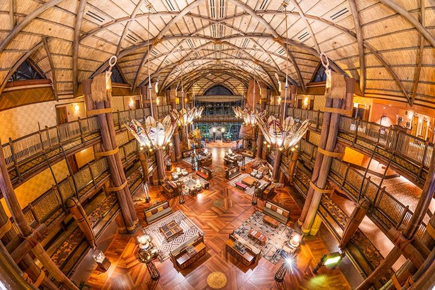

Matt DuPlessie

Backstory: This Is Fun
Matt DuPlessie
The story of a career developing and operating new location-based entertainment concepts.
Warning: Long Read. This is for the seriously interested.
I started the first escape room style concept in the world, founded in 2003, open to the public in Boston in 2004. Then spun off Box Fort, a specialty design/build company servicing museums, theaters, and theme parks for 17 years. Then founded Level99 – the category defining Challenge Room concept.
Now I’m pushing 50. Really? Time has gone fast.
If you are interested in the full story, how my professional life came to be, warts and all, … here it is: a career developing new entertainment concepts.
A Crummy Internship
It’s 1998, and this internship is not a winner. It was the summer between my junior and senior year at MIT. I was studying Mechanical Engineering, and I was so pleased to have gotten a position at a “real” engineering firm for the first time. After washing the pots for a couple years in the kitchen at Sturdy Memorial Hospital, then selling cutlery for a summer, and even working in an underground lab at MIT (that gave me a cough for a decade), it was time to try a real corporate product design job.
This company in Warwick, Rhode Island will remain nameless. But my job required sitting in a cubicle 40+ hours a week, rarely talking to another human, designing detailed mechanical parts in 3D. Back in 1998 the computers were so slow that we had two workstations in our cubicles. You would round-over a curve in your 3D model on one computer and then, while it took a few minutes to render that change, you’d roll your chair four feet away, to the other side of your sad little box, where a separate computer would let you do email or whatever else while you waited for the software to catch up.
I was 20 years old and designing the rubber boots that protect a portable printer from a fall. Maybe you've picked up a rental car at an airport and a person printed a receipt for you right out in the parking garage… that printer clipped to their belt is covered with a rubber casing to protect it from a fall onto the concrete. Well, I may very well have designed that rubber boot. Rough summer. I decided this is not what I want to be doing for the rest of my life. There must be something more fun I can do with my education.

IAAPA Show 1998
A roommate in my fraternity house at MIT and I started looking at options and industries that were off the beaten path. Perhaps every mechanical engineering student at one point thinks about rollercoasters, and so we stumbled upon IAAPA – the International Association of Amusement Parks and Attractions.
IAAPA has a monster trade show each November, generally in Orlando (though in 1998 it was in Dallas, where my roommate was from – free room & board!) This tradeshow is the industry gathering place for anyone buying or selling to the attraction industry. Everyone from the plush you’d win at your county fair to the cotton candy machines to the consultants and designers who create the world’s largest and most exciting location-based entertainment (LBE) projects. There are rollercoasters and themed environments everywhere, over 1,000 companies make an appearance.
Back in ‘98 there was no concept of student admissions (or the current “Next Gen” program) so the organizers didn’t really know how to classify two 21-year old students. When we got our name badges to enter the show floor, they just said “BUYER” in bold letters. That worked out well. We could walk up to any of the booths, flash that buyer nameplate, and ask to talk to the highest ranking person there. When that person came over, I’d whip out a resume with a big M - I - T on the top, and ended up having a couple dozen mini-interviews in the span of a few days on the IAAPA show floor.
Both my roommate and I scored further interviews and eventually job offers from that show floor walk. One of the clearest tactical pieces of advice I offer when college students ask for advice: if you know an industry you are interested in, go to their tradeshow. Just about every niche field has an annual gathering – if you want to work in cars, go to the car show. There is a trade gathering for nearly every industry. You can make connections, land interviews, and importantly begin to really understand the big players and how your target industry really works.

Starting a career in Living Color
I landed an interview with a young, fast-growing company called Living Color Enterprises, in Fort Lauderdale, FL. They flew me down for an interview in January 1999. The company was working out of a collection of garage bays – this was a scrappy, somewhat-disorganized startup, with expertise building custom aquariums (including the most realistic coral reef sculptures) and they were trying to get into large-scale themed environment fabrication. When it comes to themeparks, I love the environments, the immersion, the details, even more than the rollercoasters themselves – this was pretty exciting.

I sat for an interview with their head of engineering… who was not an engineer. During my interview, the head of the Living Color paint department burst in. She had to order paint for a giant sphere on a mardi gras float and had no idea how much paint to buy – how could anyone know the surface area of a big ball? (This was early days for the internet). “It’s 4*pi*r^2” I blurted out. They both looked at me. “How large is the ball?” I asked. “It’s about 8 feet in diameter.” I did some quick mental math: “You should be buying enough paint for about 200 square feet.” My interviewer looked at me and said “You knew that formula off the top of your head? I think you might have a job.”
I moved to Florida that June, after graduation. The toughest part was Beth. We’d had our first date on Valentine’s Day 1999, during our last semester as undergrads. I had already accepted the job at Living Color, and she was staying at MIT another year to get her masters in environment engineering. I didn’t know it at the time, but we were going to stay together, long distance, for over two years, on that foundation of 3 months together, before I would move back. But that’s later in our story.

Disney’s Animal Kingdom Lodge
I moved into an apartment in Fort Lauderdale (soon to move to Pompano Beach) in June of 1999, and started work at Living Color. Initially, I worked on aquarium projects, developing an automated tool for calculating the required thickness of these massive slabs of acrylic for aquariums, and designing a couple interactives for a travelling museum exhibit called Extreme Deep, about deep sea exploration. But I was most excited about a project the company had just landed: the theming scope for Disney’s Animal Kingdom Lodge (DAKL), a 1,400 room premier hotel in Orlando.
I was given the role of Project Engineer on DAKL – essentially the grunt on the project, resolving design details and greasing the wheels. The Project Manager and Assistant Project Manager, above me, were leading the project and were to be bonuses based on the gross profit on the project. Except that shortly after I joined the team they realized: they had missed scope and severely underbid. There probably wasn’t going to be any gross profit on the project… and no bonuses. The Project Manager quit. A few days later, the Assistant PM quit.
The CEO walked into my office and essentially said (I paraphrase): “You’re a snotty-nosed kid who doesn’t know anything yet, but you know more about this project than anyone else. So I need you to get to Orlando tomorrow morning, buy steel-toed boots on your way there, and try not to make a fool of us.” When I walked into that construction trailer the next morning, surrounded by ~20 grizzly superintendents of various trades, the first fellow I met told me how he wanted his coffee… and I said “I’m not here to make your coffee, I’m here to run this meeting, take a seat.”
For the next two years, I got beat up. I was over my head… and learned a lot. The team did an amazing job on that hotel, I still remember to the inch the dimensions of the lobby, and the design details of every column in the building. I hired 120 people (tripling the size of our team), got in the trenches, and through efficient design, hands-on site management, and thoughtful change-orders we were able to produce an amazing hotel, which won the THEA award, my first, for thematic design.
And importantly for Living Color, we made up ground and were able to break-even on the project. As no one thought that was possible, the company owner/CEO gave me some of the credit for “saving the company.” So when the day came that I told him I was giving six month’s notice before I went to business school, he asked “what can we do to keep you?” I told him it wasn’t about money, I was going to school and the girl I wanted to marry was in Boston. He told me “OK, I accept that, but when the time comes and you do your own thing, I want to be the first person you call…”

”I Love It When a Plan Comes Together” -Hannibal Smith of the A-Team
I moved back north and started my MBA at Harvard Business School in September 2001. I stayed in a dorm, as Beth and I weren’t married yet, but it was so great to be back in the same city with her – there is little loneliness like a long-distance relationship.
The first day of class was memorable for tragic reasons – September 11, 2001 – my first professor came hurrying into the classroom and said “Class is cancelled. We’ve been attacked.” We all rushed to the student center and watched the live feed. A terrible day.
But the semester went on. The rigor at HBS was at a different level than MIT (lower) , but I learned a lot and grew in confidence. It was a place that forces you to take a position and defend it, to make the case. I saw that no one knew everything, and you sometimes have to go out on a limb to create something new. You can’t wait for complete knowledge or a sure thing, or someone would already be there ahead of you. Once you know 80% and can see a potential future... GO, full speed ahead.
So each day I began working on a business plan. First question: What’s the business?
While it would have been great to open my own version of Disney World, no one was handing $3+ billion dollars out to 20-something kids. So I determined to think of a way to shrink down a theme park type experience into a single retail storefront – something I could actually design myself… and raise money for. Pick a theme, a story that was public domain (no licenses, no IP) and had a lot of shared points of reference I could build on. I settled on an archeological dig site discovering an ancient Egyptian Pharoah’s burial site.
OK, so we’ve got a Tomb, and my time at Living Color gave me some understanding of how to design and build a realistic set. But if it was a walk-through exhibit, folks would be done in 10 minutes… how would the economics work? No one is going to pay enough for a 10 minute experience to make the business make sense. We have to make a longer experience (people generally associate duration with value, as just one variable among many, when it comes to entertainment) – what would make a four-room experience last, say, 40-60 minutes? The theme parks used rides (and lines), I didn’t have the budget for that, so what would pass the time, while engaging and engrossing guests for the better part of an hour?
I settled on puzzles. A few mental and physical games in each room, which Pharoah could present as part of “proving our worthiness” and fitting into the story that a group of 2-15 people would work to solve collectively, as the story unfolded and they progressed room to room, eventually either escaping from the Tomb in honor, or “dying” and seeing a separate failure ending to the experience, like dying in the video game. I didn’t know what to call this idea, the term “escape room” wouldn’t be coined for several years, so my business plan in 2003 is just titled “The Puzzle Room.” See the photo at right of the actual first paper copy of my business plan.
Each night I would write the section of the plan that was based on what I had learned in class – if I had marketing class, I would work on the marketing section, if I had finance class, I would work on the pro forma profit & loss statements.
At HBS, they teach by the case method. Instead of lectures, most classes revolve around a situation a company finds itself in – there is a decision to be made. The “case” is 20-30 pages of background, stats, financial data, etc, and each student needs to decide what to do, as if you were in charge. One unfortunate student gets the “cold call” – randomly selected by the professor to provide their strategy and open the class discussion. And if you do very well in a particular class session, you might get a handwritten letter from the prof in your mailbox, thanking you for your contribution to the class. I got two letters at HBS, and one was from my Entrepreneurial Management professor. And so, when it came time in our second year for me to enter “The Puzzle Room” in the annual business plan competition, I asked him to be my faculty sponsor.
Financing the First Escape Room
The competition did not go well – I was eliminated in the first round. I remember being asked, “In what year will your business hit one billion in revenue?”... Ahh, suffice it to say, the venture capitalist judges looking for the next tech unicorn did not see the merits in building an ancient Egyptian pharaoh’s tomb in downtown Boston.
But sitting in that professor’s office after the failed competition, he asked if I was serious about this idea. So I decided to show my commitment; I picked up the phone and cancelled my remaining interviews with consulting companies and decided to take the entrepreneurial plunge. I think my classmates, going to McKinsey, Bain, Goldman, or some new hedge fund, thought I was just as crazy as the VC judges. But that professor was willing to put in $50k of the $650k I had estimated it would take to get a first location open. So, with a “Harvard Business Professor” on the team, I flew down to talk to the owner of Living Color, my old boss, and give him my powerpoint presentation on this strange idea.
I will never forget how he responded. After an hour, showing my sketches and explaining the concept, I asked, “What do you think?” And he replied “I’ll be honest, I don’t get this at all. I have no idea whether enough people will pay to solve puzzles in a stage set of an ancient Egyptian tomb… or not. If this business succeeds, that’s you, and if it fails, that’s because of you too. I’ll invest, but I want you to know I’m not investing in the concept, I’m investing in the person. This is on you.”
Yikes, talk about a sobering conversation. It’d be easier if he fell in love with the concept! Years later, I’ve used a talk like that several times myself – it’s effective.
At the end of the conversation, he was willing to put in $500k, big money for me, and also to introduce me to a friend who was looking for investment opportunities. He set up a call to this third angel investor and said “I’ve sent along my copy of your business plan. Just answer his questions on the phone, and if it feels like it goes well, then at the end of the conversation ask him for money.”
I was thinking, “Ask a guy that I’ve never really met for money, this is wild,” but I took the call and the conversation went well. It’s actually quite a blur to me. Thinking back, the only question I remember clearly, because it was strange, was “So, if you are calling the business 5 Wits, what does that mean?” I explained the 5 Wits from Shakespeare’s Much Ado About Nothing: they are
And the follow-up “So, that starts with a number – will that come at the beginning or the end in alphabetical listings?” I answered that numbers are generally listed first. “Oh, that’s good, that’s good. How much money are you short?” I said I needed another $100,000. “The check’s in the mail.”
No paperwork, no nothing, that came later. It was several years later, when I was more in a position to invest or advise startup concepts that I fully grasped: this final bit of investment had little to do with me, it was about the confidence of his friend and trusted associate investing that made it easy to jump in and go along. The guy who did know me well, the owner of Living Color, was taking all the evaluation risk out for his friend and telling him, “get in on this.” All I had to do was not screw it up.
I was the fourth and final investor myself – I put in essentially my whole life savings at that point.
$1,000.

5 Wits Boston
With the $650,000 investment committed, I continued to tune the business plan, and started writing scripts and designing floorplans and individual games and special effects, one by one.
I rented a tiny storefront as a shop, and hired my cousin, Nathan, a mechanical engineering student, as an intern, as we prototyped games and designed show elements together.
Professor Cavendish (a name I got off a package of frozen mashbrowns one morning, when I was writing scripts over breakfast) would meet us in a dig site tent, and group of 2-15 people would find our way into the Tomb every 15 minutes, with the show control system I was programming managing the throughput and keep groups separated. Every room would have 2-3 puzzles and fun effects like a dropping ceiling, a water projection screen, and in the grand finale the pharaoh's mummy would magically float down from the ceiling (electromagnets). I won’t go into all the details on design and effects, that’s for another article, but it was a lot of work, and a lot of fun. I made MANY mistakes, and hold the learnings to this day.
You can still play versions of that original Tomb in the northeast USA.

With the investment money, I contracted my old company Living Color to build that first Tomb set, according to my designs. Shoutout Lori and Adrian. With the help of a couple great guys in Boston who I hired (Mike, Tim, Jorge), we put the set together and started integrating games at 186 Brookline Ave, a couple blocks from Fenway Park in Boston. I was posting for engineers who wanted to help on Craigslist, and integrating custom games and special effects as we went.
Tomb opened slowly. We had no budget for marketing, so it was word of mouth and we were struggling. This concept was a hard thing to describe to people back in 2004. I remember a Friday in XXXXXX month. I paid payroll to our small team, and paid all our bills. Quickbooks showed about $400 left in the bank. This was it, either it would go or it wouldn’t, and I was going to find out pretty quick.
The next week, 5 Wits was the cover story of the Living Arts section in the Boston Globe. I got home late enough to buy the next day’s paper, and crept into our *tiny* third floor apartment in Cambridge MA. I woke my wife Beth up, shaking, and showed her the article. I consider this one of many Acts of God that have set my course over the years. The next week, 5 Wits’ revenue doubled, and never went down again. The word was out.
5 Wits Productions, later Box Fort
Not long after Tomb opened, 5 Wits began to receive inquiries: “That was great, could you design and fabricate things for us?” I decided to spin off a separate design/build company to serve third party clients, with the goal of building exciting projects, and learning more and more on the budgets of larger institutions, while isolating liability from the 5 Wits entertainment venue mothership. We called this new entity 5 Wits Productions, and some years later changed the name to Box Fort Inc, to minimize confusion between the design/build company and the public entertainment venues.
The first two big clients were the Strong Museum of Play in Rochester NY (shoutout, JP) and the International Spy Museum. In 2007, we opened Operation Spy, an hour-long, 9-room walk-through covert mission, following the throughput model of a 5 Wits.
Part of the deal with the Spy Museum allowed us to use the ideas and designs we developed for Operation Spy for our own attractions, and so we developed our own spy experience: Espionage, which opened at Patriot Place in Foxboro MA in 2010. The following year, we added 20,000 Leagues, a Captain Nemo undersea adventure. To finish this project, doubling the size of our business from one walk-through adventure to two, I sold the original Tomb to a businessman in Pigeon Forge, TN. We moved the Tomb set down to Tennessee, where it continued to operate for another decade.
5 Wits expands, Box Fort builds some cool things
The beginning of LEVEL99
This Career Story is still being written
... in more ways than one!
Additional narrative still in progress…
LEVEL99
Nam sapien ante, varius in pulvinar vitae, rhoncus id massa. Donec varius ex in mauris ornare, eget euismod urna egestas. Etiam lacinia tempor ipsum, sodales porttitor justo. Aliquam dolor quam, semper in tortor eu, volutpat efficitur quam. Fusce nec fermentum nisl. Aenean erat diam, tempus aliquet erat.
Etiam iaculis nulla ipsum, et pharetra libero rhoncus ut. Phasellus rutrum cursus velit, eget condimentum nunc blandit vel. In at pulvinar lectus. Morbi diam ante, vulputate et imperdiet eget, fermentum non dolor. Ut eleifend sagittis tincidunt. Sed viverra commodo mi, ac rhoncus justo. Duis neque ligula, elementum ut enim vel, posuere finibus justo. Vivamus facilisis maximus nibh quis pulvinar. Quisque hendrerit in ipsum id tellus facilisis fermentum. Proin mauris dui, at vestibulum sit amet, auctor bibendum neque.